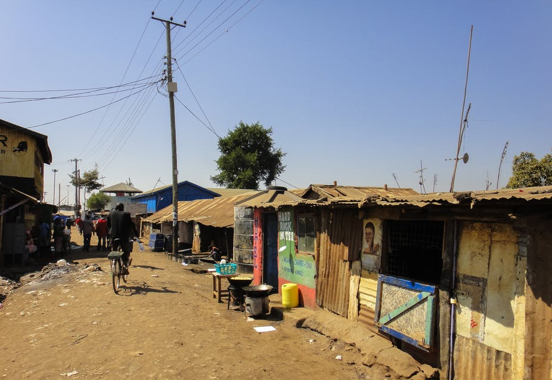
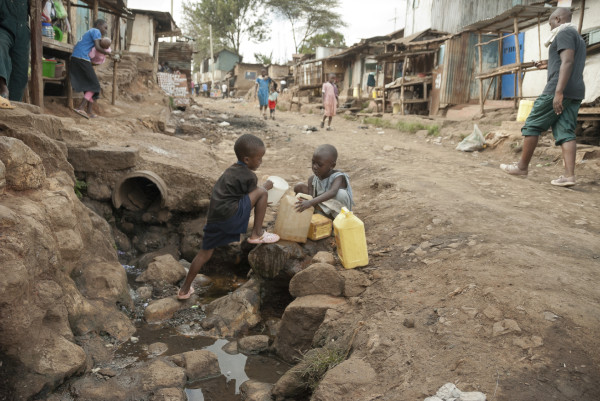

The Solution to Ending Poverty
 Solution
Three important steps must be taken to eliminate poverty in Sub-Saharan Africa.
1) Insitutional Arrangements
This program requires a strong and effective leadership, inspection and accountability from the top levels of government. Also, better control of the use of funds, improved coordination between funding channels and a stronger monitoring effort. Poverty offices should be strengthened in each town in order to have enough staff to properly oversee the quality of the program.
2) Direct Funds to Poor Towns
It is crucial to increase the impact of the poverty reduction programs by directing all the funds to poor towns within Sub-Saharan Africa. This will reduce leakage to the non-poor in rich areas.
3) Multiyear Intervention Project
For the poorest of people, this approach should replace the large poverty loan program which is performing below expectations.The governments efforts to run credit schemes do not look promising and government funds would be better spent supporting other causes. Refinements in existing agriculture, health and education, labor mobility and voluntary resettlement programs could bring marked benefits.